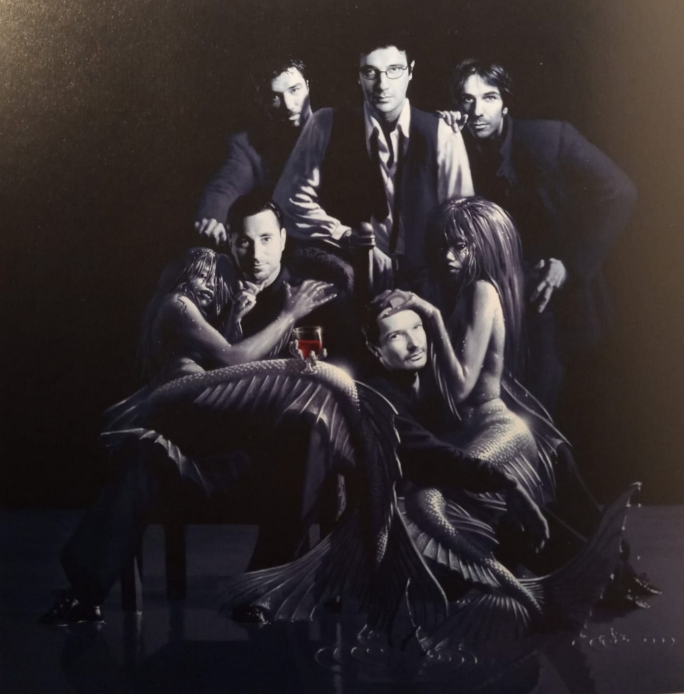

The Scene
TBF, klapa and Libar — Split as a subject
The influence of TBF is not a single sentence about pioneers. It is often glued to membership in the recording lineup, when the layers do not coincide: the channel before the catalogue, a language that becomes a method, an institution that eats the genre, and transfers into theatre and a book. Libar is not a continuation of that influence as consolation. It is a second war on the same ground — Split as a subject, this time through polyphony outside folklore and pop outside the estrada.
The channel before the catalogue
Before an album, Split hip-hop is heard from sailors’ cassettes and from MTV, and has no record of its own. The early lineup — Čelan, Mladen Badovinac, Luka Barbić, with friends — does home production, local radio and the first public performance. The 19 December 1992 show, opening for Dino Dvornik at the launch of Priroda i društvo at Kakadu, is the street stepping onto an institutional stage before a catalogue existed.
Ping-pong (Umjetnost zdravog đira) (1997) stands in several sources as the first complete Croatian hip-hop album, or as the first that turns Split from a listener into a publisher. Zagreb in the same years has Tram 11; the difference is not who was “first”, but the tone. Zagreb goes into a political register; Split into a chronicle of the city, a phlegmatic tone and black humour. TBF opens a southern idiom: less aggression, more melody, a line from Miljenko Smoje and Toma Bebić alongside a formative listening to Public Enemy. The genre influence is concrete: the group invents the name ping-pong to pre-empt the objection that this is not hip-hop. The mix of rap, a live band, reggae, trip-hop and samples is later normalised. Anyone in Croatia doing “rap with a band” works in a space that album opened, not a manifesto.
The influence of the writing is greater than the influence of the rhythm. Saša Antić joins in 1993/94; his lyrics become the measure. Three things are inherited as a method, not as quotation: the city as a character (ST stanje uma is not a song about Split — Split is the subject), satire without distance from the street, and the rejection of turbofolk as a cultural stance rather than a matter of taste. The lyricist of the recording phase is Antić. The early lineup builds the channel — radio, demo, Kakadu — through which that language later comes out. The influence of the language is not Čelan’s sole authority; the influence of founding the channel is.
From Maxon and Galerija Tutnplok onward, TBF stops being only a scene and becomes a city institution: Porin awards, larger halls, a regional tour. The next generation of Split rap, for example Dječaci after 2008, does not sound like TBF. At the opening of the album Istina (2011), Papi Batina, in the first verse, measures himself against that layer: “old school sam ka Čelan u TBF-u”. The influence is not a stylistic clone, but the fact that Split is no longer a hip-hop province. The paradox remains: the more institutional TBF becomes, the less it is “hip-hop” in the narrow sense. It is a reference point even when the new scene no longer imitates it.
The palace, the book, the boundary
Čelan’s points are not a biography in three pictures. They are a filter: what may be attributed to him, and what remains with TBF as an institution. None of the points is the album Ping-pong.
| Year | Medium | What is carried over | What is not |
|---|---|---|---|
| 1990–94 | demo, radio, Kakadu | the existence of the group, the first stage | the studio catalogue |
| 1999 | Baš beton (Ivica Buljan, Split Summer Festival) | TBF’s method into the theatre: song, satire of the city, non-professional actors | membership in the lineup |
| 2017 | Baština | historiography of the early scene | an official band biography |
Baš beton comes after he left the lineup and after Ping-pong. Buljan takes TBF as Let 3 is taken with Fedra: not as a cameo, but as the sonic and ideational engine of a play about concrete, dust and the palace. That is why this is influence, not a lineup list. Occasional appearances in 2017 and 2019 belong to the same series, in a weaker form — a body on stage, without a new record.
Baština turns the oral scene into a source that can be cited. Without it, the early phase remains a footnote (“a former member”). With it there is an authorised record that the band did not write itself. The boundary has to stay hard: a memoir, not an official biography. TBF did not invent Croatian rap; Rijeka and Zagreb have their own line. It did not stop turbofolk. It did not determine the sound of rap after 2008. The largest influence is not “everyone sounds like TBF”, but that Split is listened to as a subject, that Split urban speech may go onto a recording without a folkloric alibi, and that social criticism may laugh.
Saturations
At the beginning of the 2000s those three saturations coincided. TBF was already an institution. In 2002 Čelan returns from Zagreb to a city which, according to Baština, had got worse than the generation had expected — not for lack of hits, but because of the programme: the fešta, turbofolk, the same specialists. Klapa stops being a local rite and becomes a recording medium and a brand — Omiš, the Dalmatian Chanson Evenings, later Dora. Iskon takes that path. Čelan leaves in 2006, before the later, newly composed recording phase. The klapa’s name remains on the market; his share remains on the old recordings.
The klapa path does not begin in Omiš, but in Zagreb. After arriving at university in 1996, Čelan revives the student klapa Lebić, under the direction of composer and conductor Pero Gotovac. Lebić is not a detour from hip-hop, but the same channel from the other side: at Cro session in 1999 the klapa sings Splitsko stanje uma with TBF. That engagement brings an invitation to Puntari, and Puntari the Silver Shield at FDK Omiš in 2000.
Puntari 2000 stand here as evidence, not as a precursor: one festival year is enough. Libar in 2007 takes the vocal, not the calendar of the Festival of Dalmatian Klapa. It is not a continuation of Iskon. It is an exit from klapa as an institution, with people who can still sing in the klapa manner, but will not play Omiš as a career.
The second war
Libar is not one group with one lineup. The name is a project that changes medium; continuity is held by the title and by Čelan, not by the 2017 list. The method through every phase: a Dalmatian vocal as the carrying part in someone else’s genre. The word libar (book) is not ornament — the catalogue is rewritten, not preserved as folklore.
The first whole is still acoustic. Founded in 2007: vocals from klapa groups (Iskon, Šufit, Cambi, Tragos, Grdelin…) and instrumentalists from the scene. First performance at Rijeka Summer Nights in 2008. The album Libar Prvi (Menart, 2008) — twelve arrangements. The First Indexi award in Sarajevo in 2009, for best regional ethno album, says “ethno”; the intention was to cancel the canon, not to sell it. After the first album the attribute “klapa” is dropped. Anyone still saying “klapa Libar” in 2012 is listening to the label, not the group.

The second whole falls into a narrow window, 2008–2012, when Split still hears large vocal rock as a novelty, not as nostalgia. Five equal vocals with a band. The first original song Dite (Sina Jakelić; arrangement Jakelić, Čelan, Jan Ivelić, Vojan Koceić) lands at the Dalmatian Chanson Evenings in 2010 because it is neither klapa nor chanson in the narrow sense: the sea as subject, the child as a state. Three Šansonijer awards — newcomer, lyrics, audience. The album Libar (Menart, 2012) attempts the same across ten original songs. An Impala nomination for European indie. This is not TBF’s method. TBF is the city, satire and sample. Libar is emotion, harmony and the festival. What they share is only the refusal that Split should be allowed to sound in only one way.
The concert at O'Hara on 22 October 2011 — 530 tickets — is the peak of the club phase, at the same address where the first full-length TBF show was in 1993. The Riva in 2015 is the move out of the club onto a city stage. The cost: the repertoire has to hold children, parents and Depeche Mode. Čelan’s sentence that morning — “Split can, and likes to, do it differently” — is political, not marketing: the city’s programme, not a set list. The large lineup is more expensive than the hits it carries. Čuvaj me (Aquarius, 2015), Na putu prema njoj (2016), Zakon soli at the Dalmatian Chanson Evenings in 2017 — and the break. Some members leave for Salto Guru. They did not “fall apart”; the reason to be the same organism disappeared. The name stays with the founder because the name was a project, not a cooperative.
In the same year Baština comes out. One medium closes the oral TBF scene; the other closes Libar’s collective chapter. The encyclopaedia still holds the list Rivier, Jakelić, Colnago, Alajbeg, Radić, Ivanišević, Koceić, Čelan as the present. That list holds for 2017, not for 2026. Wikipedia correctly records the founding, Prvi, Libar, Dite and the Indexi award; it freezes the members and the genre; it skips the break-up, Salto Guru, ownership of the name, Devčić and Nova Zemlja. The same mechanism as with Iskon: catalogue and membership stick together, the founder is lost in the mid-phase collective.
What remains
Kliješta (Greenwood, 2022) is already credited to Čelan and Antun Devčić. The EP Nova Zemlja (Aquarius, 11 April 2025) — Nova Zemlja, Kliješta, Nokturno, Krojeni za kraj with Neda Pejković — is not a return to klapa. Opera is the vocal as a special effect, the same material in a third medium. Reference points of the phase: Enigma, Pink Floyd, Soft Cell, OMD, Hurts, Pet Shop Boys… “An eight-year pause” in the announcements marks the end of the large lineup, not a break in the work. Salto Guru is the remainder of the band without the name; Libar is the name without the remainder of the band.
The Croatian Home, 24 April 2025, is an institutional space, not O'Hara. A film instead of 530 tickets in whisky. Split in the 2020s has no club that does what O'Hara did in 2011; the project moves to a hall and to a stream because the street is no longer infrastructure.
TBF gave Split the right to be a subject. Libar tests whether the same city may listen to polyphony outside folklore and pop outside the estrada. The first test succeeded in 2010. The second is still open.